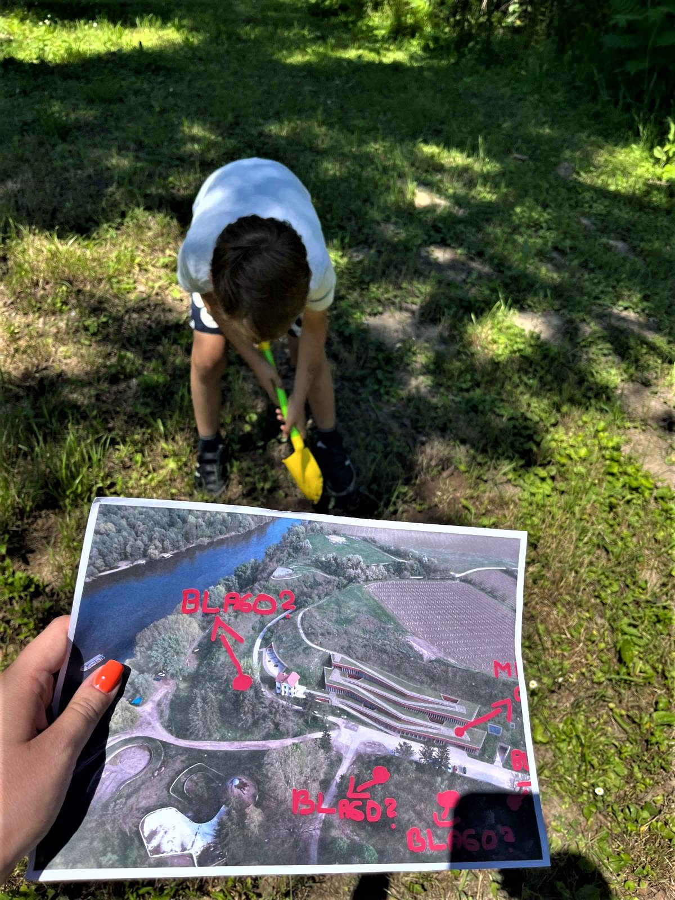
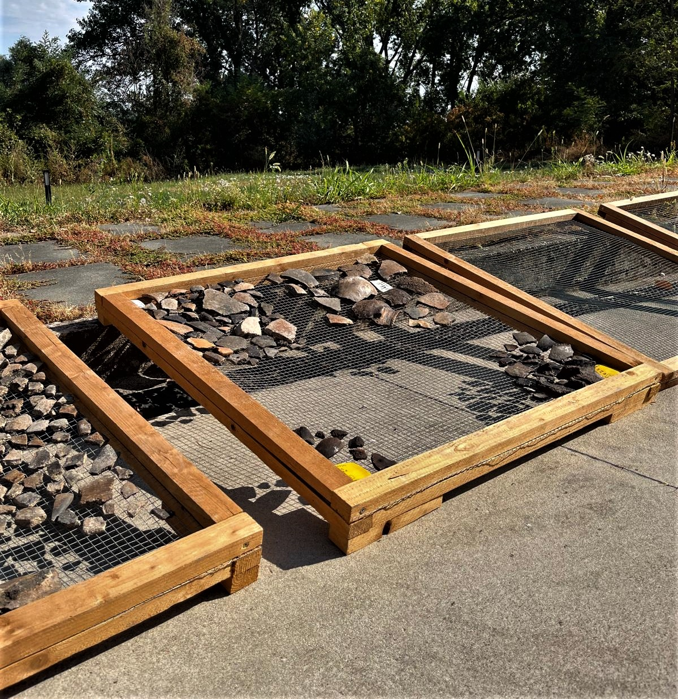
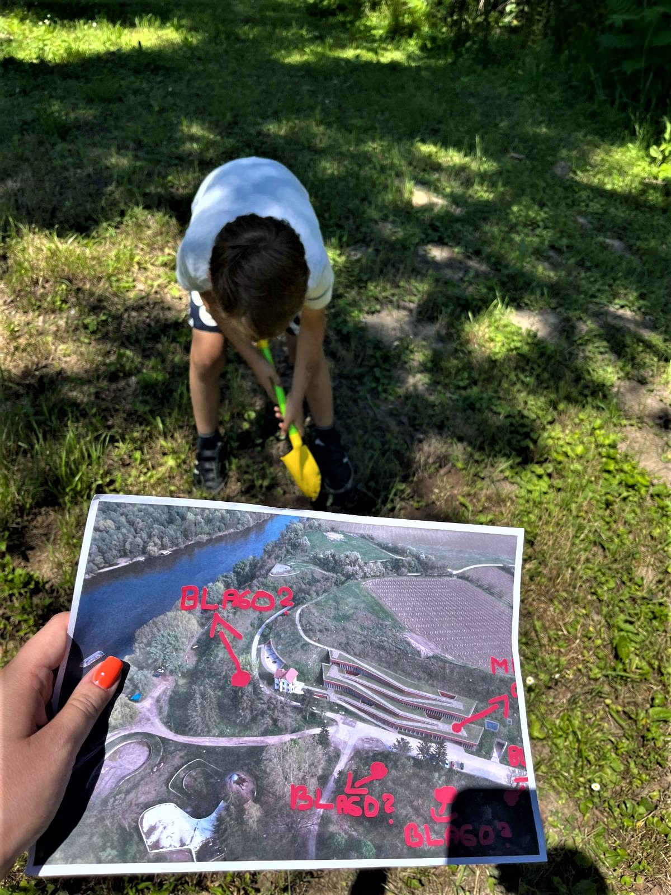
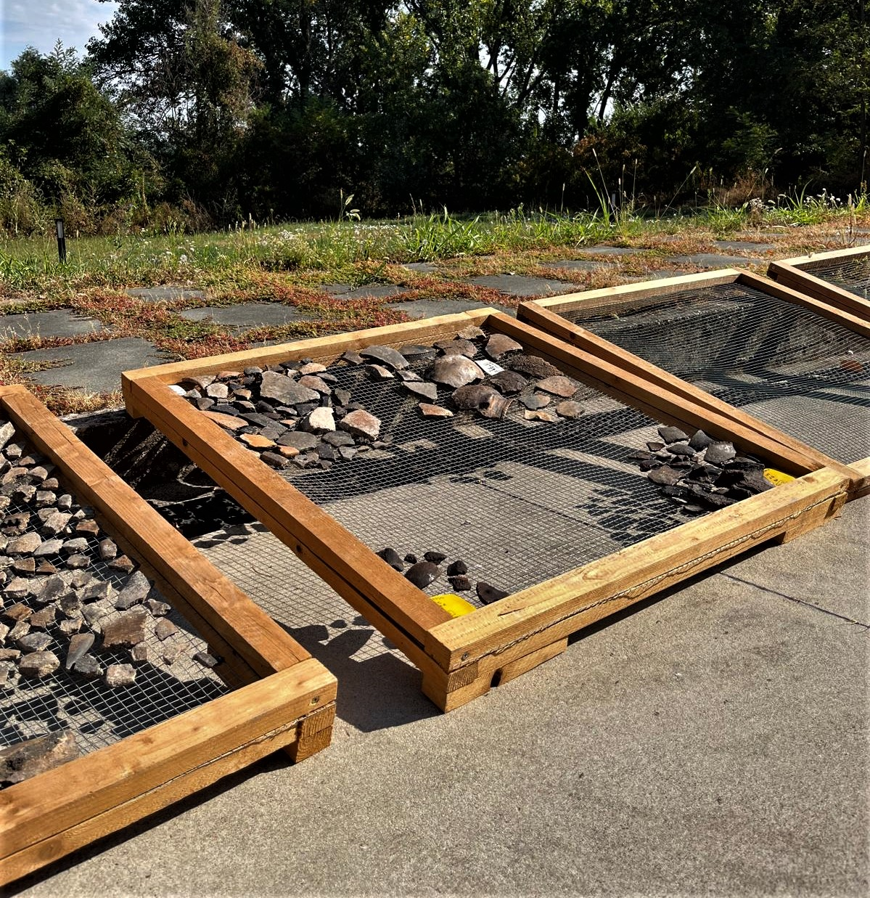

Vučedol danas
Vučedolska kultura važna je jer nam pomaže razumjeti kako su ljudi živjeli u prapovijesti i kako su gradili temelje za buduće civilizacije. Njihova upotreba metala, razvoj astronomije i umjetnosti pokazuje koliko su bili napredni za svoje vrijeme.
Muzej Vučedolske kulture, koji se nalazi na samom nalazištu, omogućuje nam da bolje razumijemo ovo razdoblje povijesti. Muzej čuva brojne artefakte, poput Vučedolske golubice, ali i prikazuje život ljudi kroz makete naselja, interaktivne izložbe i prikaze svakodnevnog života.
Osim što nas uči o prošlosti, Vučedolska kultura inspirira nas da razmišljamo o budućnosti. Pokazuje nam koliko su ljudi tada bili snalažljivi, kreativni i povezani s prirodom. U svijetu koji se stalno mijenja, važno je sjećati se svojih korijena i učiti od onih koji su živjeli prije nas.
Danas, Vučedol je ponos Hrvatske i cijelog svijeta. Njegova priča nije samo povijesna činjenica – ona je dio našeg identiteta, simbol naše bogate kulturne baštine i podsjetnik na to koliko su naši preci bili napredni i maštoviti.
 


